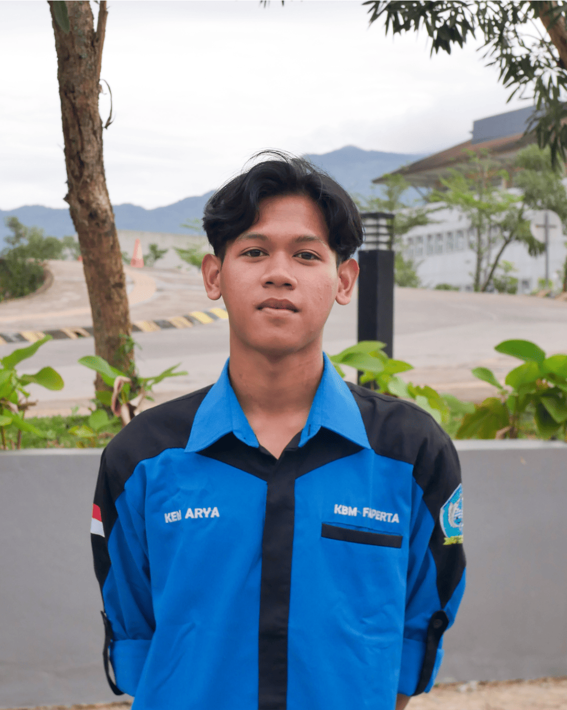
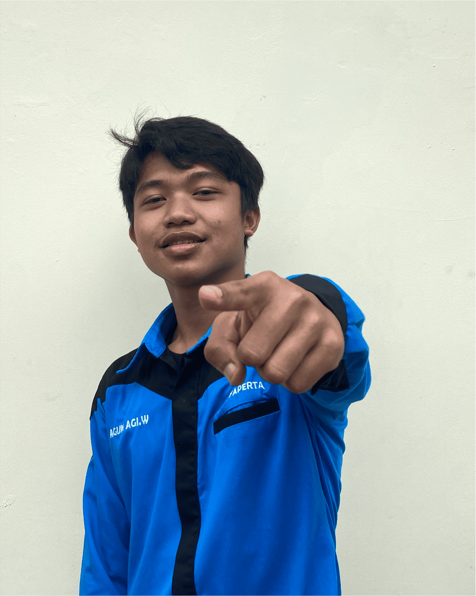

Profil Kepala Divisi

Nama Kepala Divisi
Periode 2025–2026

Ken Arya Wicaksana
Periode: 2024–2025

Aditya Pratama
Periode: 2023–2024

Agun Agi Wiguna
Periode: 2022–2023
Pandu Annahjil Qowim
Periode: 2021–2022
Yonita Nabila
Periode: 2020–2021
Ade Supriatna (Advokasi) Esa Rama Widyawan (Kajian)
Periode: 2019–2020
Hendra Setiawan (Advokasi) Fitriyanti (Kajian)
Periode: 2018–2019
Teddy Kartiwa (Advokasi) Esa Rama Widyawan (Kajian)
Periode: 2017–2018
×
Nama Kepala Divisi
Jabatan: Kepala Divisi Kaderisasi
Angkatan: 2022
Periode 2025-2026
Moto:asmkdasndam